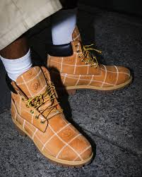

$450000
La colaboración Timberland x Supreme en color amarillo está fabricada con nubuck premium y una suela de alto rendimiento. Incluye detalles co-brandeados, diseño llamativo y una estética streetwear de alto impacto que refleja exclusividad y cultura urbana.